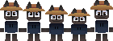
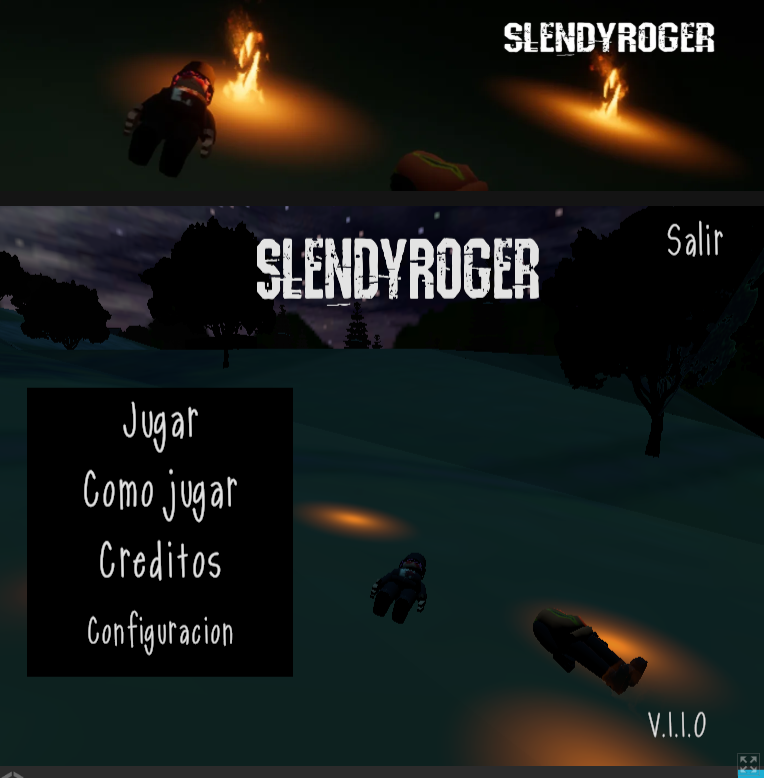
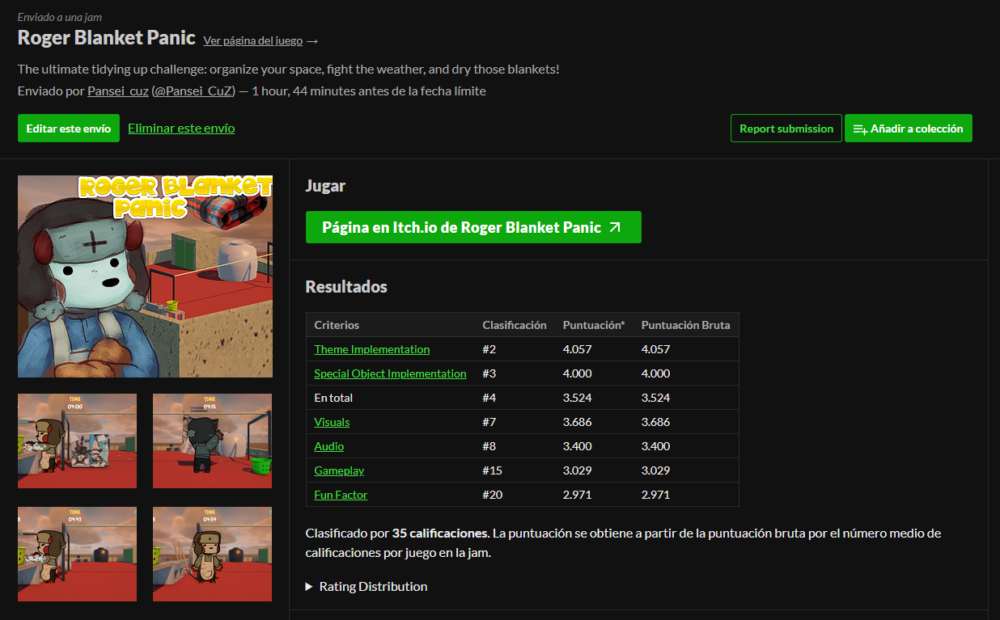
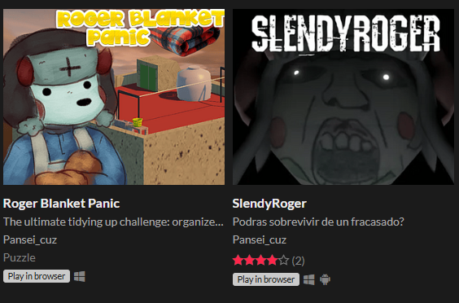
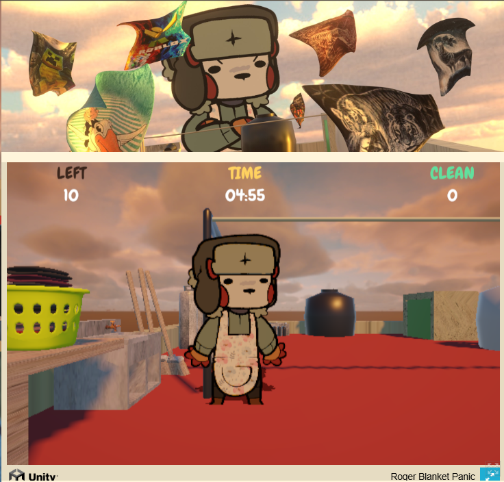

Proposito de pagina
esta pagina es para desarrollar mas sobre git y aparte HTML y css, tambien lo podria catalogar como un portafolio quizas, igual espero que les guste la pagina!
Mi Historial de trabajos
Mayoritarimente los trabajos que eh hecho a la fecha han sido de naturaleza voluntaria, educativa, experiencia laboral y tenerlo en mi portafolio. fui Betatester en un juego indie a partir del 2023 inspirado en el juego de "Five Nights at Freddys" aparte fui ilustrador para decoracion del juego y animacion de menu de espera de escena A al B (Menu de Carga).
Otro trabajo que eh hecho han sido de estar trabajando en Mod de FNF (Friday Night Funkin) siendo tambien, Animador de Sprites y Disenador de personajes en Adobe Animate, la mayoria de estos proyectos nunca salieron al publico ya por temas de los encargados de cada proyecto, yo era solo un trabajador que hacia los sprites y aveces los configuraba para que esten correctamente posicionados en el juego y no hubieran problemas al jugar.

Proyectos Personales
Aparte de hacer trabajos para proyectos de otros, yo eh hecho mis propios proyectos personales. que al igual que los trabajos profesionales, lo eh hecho para mejorar mis habilidades y tener experiencia en diferentes áreas del desarrollo en parte de la animacion. en mis videos eh tratado de usar la mayor animacion que puedo hacer como por ejemplo en el video de " Te explico anma 1/2 (Con cero Seriedad) " haciendo animaciones Looping (en bucle constante), fisicas, y demas.
Trabajos Profesionales
En cuanto a Trabajos Profesionales, eh hecho algunas a mano de mi grupo de trabajo profesional llamado "La Prision", haciendo proyectos variados a nuestros nombres en las paginas Itch.io y GameJolt, siendo mayoritariamente tres encargados de esto, Roger: Parte del modelaje 3D, Pansei_Cuz: Programación y diseñador de conceptos, y Yo (Dibujos): Diseños de personajes, animacion y ilustracion.
Este 2026 fue el año que trabajamos mas en proyectos apartes del stream o el de la serie, hicimos un juego parodia del conocido juego "SlendyTubbies" llamado "SlendyRoger" que consiste en Roger se volvio loco y debes recolectar 15 Miyabis por el mapa de GTA San andreas, ya el segundo y el mas reciente fue hecho para un concurso llamado "GameJam" que consiste en hacer un juego en un tiempo limitado y de una tematica que te dan en el dia 1, nosostros participamos y trabajamos por 3 dias en un juego de ordenar frazadas llamado "Roger Blanket Panic" que termino en 4to lugar de 70 puestos y siendo el mas votado, y en esos dos juegos siendo yo el encargado de disenos, visuales y efectos de sonido.



